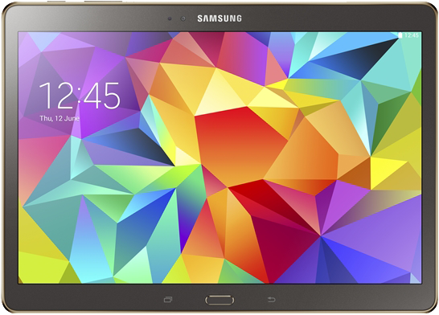

삼성 갤럭시 탭 S 10.5
1. 외관

삼성전자가 2014년 6월에 공개한 안드로이드 태블릿 컴퓨터 라인업이자 갤럭시 S 시리즈 최초의 태블릿 컴퓨터 모델이다.
2. 사양
| 프로세서 |
삼성 엑시노스 5420 SoC. ARM big.LITTLE↓, ARM Mali-T628 MP6 -- MHz GPU ARM Cortex-A15 MP4 1.9 GHz + ARM Cortex-A7 MP4 1.3 GHz CPU |
||
| 메모리 | 3 GB LPDDR3 SDRAM, 16 / 32 GB 내장 메모리, micro SDXC (최대 128 GB 지원) | ||
| 디스플레이 |
10.5인치 WQXGA(2560 x 1600) S-Stripe RGB 서브픽셀 방식의 삼성D Super AMOLED (287 ppi) 멀티터치 지원 정전식 터치 스크린 |
||
| 네트워크 | 기본 | LTE Cat.4, TD-LTE, HSPA+ 42Mbps, HSDPA & HSUPA & UMTS, TD-SCDMA, GSM & EDGE | Wi-Fi 802.11a/b/g/n/ac, 블루투스 4.0, NFC, ANT+ |
| - | - | ||
| 카메라 | 전면 210만 화소, 후면 800만 화소 AF 및 LED 플래시 | ||
| 배터리 | 내장형 Li-Ion 7900 mAh | ||
| 운영체제 | 안드로이드 4.4 (KitKat) | ||
| 규격 | 177.3 x 247.3 x 6.6 mm, 465 g | ||
3. 상세
10.5인치 모델이다. 대응되는 갤럭시 탭 PRO 10.1과 갤럭시 노트 10.1 2014 에디션보다 배터리 용량이 적다.
16 GB 모델의 출고가는 PRO 10.1과 동일한 $499로 책정되었다. S-Stripe RGB(트루 RGB) 방식을 채용.